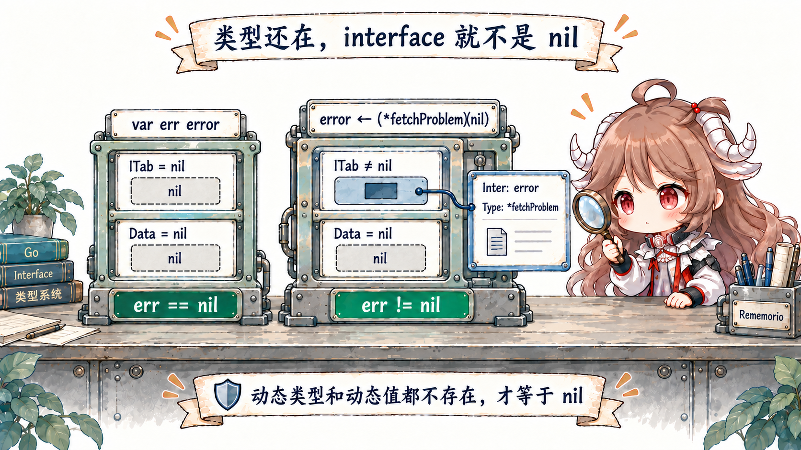
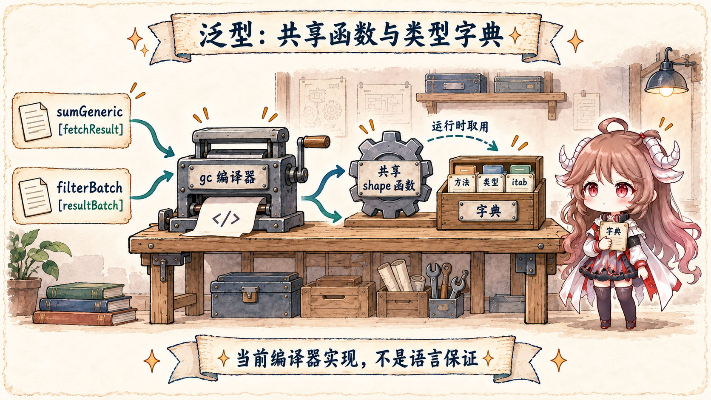
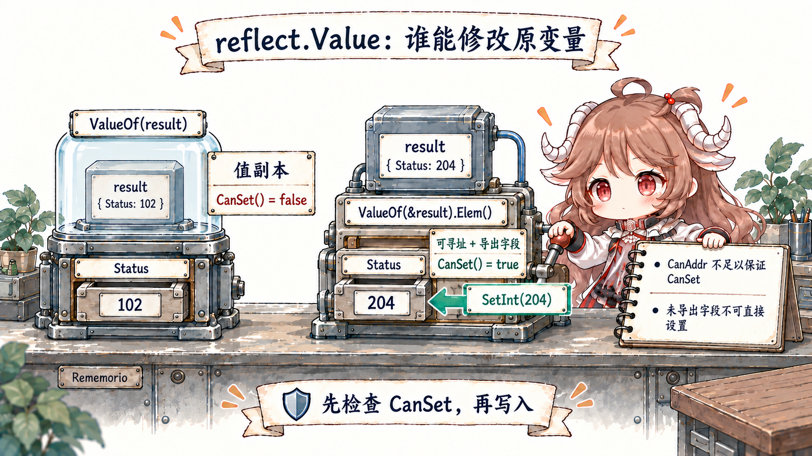

阅读契约：不需要先懂 interface 的两个 word 或泛型字典。先学会按“类型什么时候才确定”做选择：调用前就知道一族类型，用泛型；调用时只关心一组行为，用 interface；直到运行时才知道字段和类型，才考虑反射。
前半篇先按使用场景讲语义，后半篇才读实现。规范证据来自 Go Language Specification；实现证据固定到 Go 1.26.0 tag 的 internal/abi/iface.go、 runtime/iface.go、 编译器 noder 与 reflect/value.go。
一、先用三个需求选择抽象
假设 fetchd 现在有三个需求。第一，日志函数只需要“能输出说明”的值，不在乎它的具体类型；这适合一个很小的 interface。
第二，同一个过滤函数要同时处理 []fetchResult 和自定义的 resultBatch，并保留传入的静态类型；这适合泛型。
第三，JSON 编码器要读取任意结构体的字段名和 tag，而字段集合直到运行时才知道；这才是反射擅长的范围。
三者不是从低级到高级的升级路线，也没有一个永远更快。它们只是把“类型信息何时确定”放在不同阶段：interface 在运行时携带具体类型，泛型在编译时约束一族类型，反射在运行时检查和操作类型描述。
| 抽象 | 选择发生在哪里 | 适合的问题 | 主要风险 |
|---|---|---|---|
interface | 运行时动态具体类型 | 调用方只依赖行为，具体实现可替换 | typed nil、装箱/逃逸、过宽接口 |
| 泛型 | 编译期类型参数与 type set | 同一算法或数据结构作用于一族静态类型 | 为“抽象”而抽象、约束泄漏实现细节 |
| 反射 | 运行时类型、字段名或 tag | 序列化、依赖注入、schema 驱动框架 | 无效 Value、不可设、panic、性能与可读性 |
表格把刚才三个需求压缩成选择规则。如果函数只需要调用 describe()，让参数成为一个最小 interface；如果同一段过滤逻辑要保留 resultBatch 这样的命名 slice 类型，类型参数正合适；只有输入模式到运行时才知道时，才把字段名交给反射。
官方文章 When To Use Generics 也给出同样的方向：先用普通函数或 interface 表达行为，泛型用于相同实现，运行时类型变化且两者都不合适时再考虑反射。
二、interface value 不是“指向对象的一个指针”
规范把 interface value 描述为一对信息：动态类型和动态值。runtime 里，空接口 eface 保存 _type + data，有方法的接口 iface 保存 itab + data。
itab 又连接 interface 类型、具体类型和方法入口。理解这两个 word，typed nil、类型断言和 interface 转换就不再是特例合集。
// runtime/runtime2.go
type iface struct {
tab *itab
data unsafe.Pointer
}
type eface struct {
_type *_type
data unsafe.Pointer
}2.1 typed nil：Data 可以为空，类型 word 仍不为空
var p *fetchProblem 让 p 成为类型为 *fetchProblem 的 nil pointer；赋给 error 后，interface 的动态类型是 *fetchProblem，动态值才是 nil。
interface 只有在动态类型和动态值都不存在时才等于 nil，所以 err != nil。这不是 runtime 偶然行为，而是规范的 interface value 与比较规则。

var empty any
fmt.Println(empty == nil) // true
var problem *fetchProblem
var err error = problem
fmt.Println(err == nil) // false
fmt.Printf("%T\n", err) // *main.fetchProblem
工程上不要让一个返回 error 的函数把 typed nil pointer 直接装进接口。要么在返回点显式判断 pointer 并返回字面量 nil，要么让零值接收者本身有完整语义。
反射还有第二个坑：reflect.ValueOf(nil) 返回 zero Value，不能先无条件调用 Kind 之外的很多方法；而 typed nil 的 Value 是有效的 pointer Value，需再问 IsNil。
2.2 getitab 把类型对映射成方法表
把具体类型转成非空 interface 时，runtime 需要这对“interface 类型 × 具体类型”的 ITab。getitab 先走无锁查表快路径；未命中时加锁重试，再从 persistent allocator 建表并加入全局 itabTable。
如果具体类型缺方法，失败结果也可被缓存；强制转换需要 panic 的完整缺失方法名时才重新初始化以得到诊断。
type ITab struct {
Inter *InterfaceType
Type *Type
Hash uint32
Fun [1]uintptr
}
itabInit 利用 interface 方法列表和 concrete 方法列表都按名称排序的事实，用两个游标线性归并，复杂度是 O(ni+nt)。匹配时把具体方法入口写到 Fun[k]；找不到时保留 Fun[0] == 0 并返回缺失方法名。
这比把每个调用都做成按名字搜索更重要：一次建立/查表之后，接口调用沿已确定的槽位跳到函数入口。
2.3 装进 interface 时，值可能复制，也可能逃逸
ITab 只解决“怎样调用”；Data 仍要保存动态值。通用 convT 用 mallocgc 分配一块按具体类型布局的存储，再用 typedmemmove 复制值。
runtime 还为 16/32/64 位整数、string 和 slice 提供专门转换，并可复用小整数或零值的静态存储。是否真的发生 heap allocation 仍取决于调用形状、内联和逃逸分析，不能从源码里看到 mallocgc 就推断每次 interface 调用都分配。
func convT(t *_type, v unsafe.Pointer) unsafe.Pointer {
x := mallocgc(t.Size_, t, true)
typedmemmove(t, x, v)
return x
}
类型断言的语言语义是检查动态类型是否实现目标接口或是否与目标非接口类型一致。runtime 的 assertE2I/typeAssert 对应这条边界，并维护断言缓存；带 comma-ok 的断言失败返回零值和 false，不带 ok 的失败 panic。
缓存和转换 helper 都是实现细节，代码只能依赖断言语义。
三、泛型保留的是一族静态类型
interface 参数把每个值装进共同的动态容器；类型参数则让一次调用先选定具体类型实参。约束是 interface 形式的 type set，说明允许哪些类型和操作。
filterBatch[S ~[]E, E any] 里的 ~[]E 不只是接受 slice：它接受底层类型为 []E 的命名类型，因此返回值仍是 S，resultBatch 不会退化成 []fetchResult。
type resultBatch []fetchResult
func filterBatch[S ~[]E, E any](values S, keep func(E) bool) S {
filtered := make(S, 0, len(values))
for _, value := range values {
if keep(value) {
filtered = append(filtered, value)
}
}
return filtered
}
这就是泛型的好用边界：算法对元素具体类型没有额外运行时分支，调用者还保留静态类型。相反，如果代码只是对一个值调用 Read、Write 或 describe，把 interface 换成单一类型参数通常只会让签名更复杂；官方指南明确建议这类行为抽象继续用 interface。
3.1 当前 gc 编译器怎样落地：shape body + dictionary
Go 规范不规定泛型必须单态化、擦除还是传字典。Go 1.26.0 的 gc 编译器会为可共享实现选择 shape，并写出运行时 dictionary；dictionary 可包含类型参数的方法表达式、子字典、runtime type 和 itab。
readerDict/writerDict 负责读写这些条目，shapify 选择 shape。它们是理解当前二进制和 profile 的源码证据，不是可被业务代码依赖的 ABI。

对实验包禁用内联并查看符号，可以同时看到具体的 dictionary 与 shape 函数：
...dict.sumGeneric[...fetchResult]
...dict.filterBatch[...resultBatch,...fetchResult]
sumGeneric[go.shape.struct {...}]
filterBatch[go.shape.[]fetchResult,go.shape.struct {...}]“有字典”也不等于“每次都慢”，正如“interface 有 itab”不等于“每次都分配”。内联、去虚拟化、逃逸、具体约束操作和 CPU 前端都会改变结果；要优化的是真实 hot path，而不是某个抽象名字。
四、反射把 interface 拆成 Value
反射第一定律是 interface 到 reflection object：ValueOf 对 nil 返回 zero Value，否则用 unpackEface 取出类型和数据。
reflect.Value 自身保存 typ_、ptr 与 flag；flag 的低位编码 Kind，另外还记录只读、间接存储、可寻址和 method value 等状态。第二定律是 Interface() 把 Value 再打包回 interface。
type Value struct {
typ_ *abi.Type
ptr unsafe.Pointer
flag
}
packEface 还展示了一个不容易从 API 表面猜到的边界：把一个可寻址、间接的 Value 暴露为 interface 时，reflect 可能先复制到新存储，避免后来通过 Value 修改已经装箱的值。
这种别名控制属于实现机制；调用者应只依赖 CanAddr、CanSet 和导出规则。
4.1 第三定律：要修改，Value 必须可设置
reflect.ValueOf(result) 接收的是 interface 中的 struct 副本，得到的字段不可寻址，所以 CanSet() == false。传 &result 后，pointer Value 的 Elem() 指向原变量，runtime 把它标成 addressable；导出字段且没有只读标志时才可设置。
CanSet 的实现本质上就是检查 flagAddr 已置位且没有只读位。

func (v Value) CanSet() bool {
return v.flag&(flagAddr|flagRO) == flagAddr
}
func (v Value) Set(x Value) {
v.mustBeAssignable()
x.mustBeExported()
var target unsafe.Pointer
if v.kind() == Interface {
target = v.ptr
}
x = x.assignTo("reflect.Set", v.typ(), target)
if x.flag&flagIndir != 0 {
typedmemmove(v.typ(), v.ptr, x.ptr)
} else {
*(*unsafe.Pointer)(v.ptr) = x.ptr
}
}
Go 1.26 还提供泛型函数 reflect.TypeAssert[T](v)，语义等价于 v.Interface().(T)，但实现可用 abi.TypeFor[T]() 走更直接的路径，并在 interface 断言失败时避免为了失败结果分配。
它让“从反射世界返回静态类型”更清楚，却不会取消 Value 的有效性、导出性和可设置性检查。
五、实验：分别验证语义，不给抽象排总榜
interface_lab_test.go 有四组可重复测试：interface 保留动态类型和值；typed nil 不等于 nil；generic filter 保留命名 slice；反射只有通过可寻址 pointer 的导出字段才能修改。
cd go-runtime/examples/fetchd
go test -run 'Test(Interface|TypedNil|Generic|Reflection)'
go test -race ./...
go vet ./...
go test -run '^$' -bench BenchmarkAbstractionBoundaries -benchmem
64 个 fetchResult 的微基准把装箱好的 interface slice 放在计时循环外：generic constraint 和 interface 调用都为 0 alloc/op，reflection 也没有每轮分配，但按字段名迭代明显更慢。
在这一个构造里，预装箱 interface 甚至略快于 generic method constraint；这正说明不能把泛型宣传成“更快的 interface”。如果把装箱、构造 slice 或逃逸移进循环，结论会随实验问题变化。
| 证据 | 它能回答 | 它不能回答 |
|---|---|---|
| 规范 | 动态类型、断言、比较、type set 的语言语义 | 当前二进制用几份代码 |
| runtime/reflect 源码 | Go 1.26.0 的布局、缓存、复制与 flag | 未来版本稳定 ABI |
| 编译器符号 | 该构建里确实存在 shape 与 dictionary | 其他调用一定共享相同 shape |
| benchmark + allocs | 固定输入和调用形状的成本 | 三种抽象的普遍胜负 |
六、回到 fetchd 的工程规则
- interface 由消费者定义，而且尽量小。只需要
describe()就不要要求十个无关方法。 - error 返回点消灭 typed nil。pointer 为空时返回真正的
nil，不要把它先装进error。 - 泛型用于同一实现。容器、过滤、归约和保持命名类型是好信号；只调用一个行为通常不是。
- 约束描述必要能力，不描述偶然结构。能用方法集合就不要让调用者暴露字段布局。
- 反射留在边界层。把字段/tag/schema 解析封装一次，业务循环拿到已验证的静态函数或 descriptor。
- 每次反射写入先检查。有效性、Kind、nil、addressable、settable、exported 和转换规则缺一不可。
- 性能结论跟调用形状绑定。先看逃逸、allocs、profile 和生成符号，再决定是否改抽象。
可复用结论是：interface 把“哪个具体实现”留到运行时，泛型让“同一算法”在编译期接受一族类型，反射才把类型结构本身变成运行时数据。
选择它们的依据是边界在哪里，不是哪个语法更新。下一篇会让 fetchd 正确结束：从 request context 的取消树读到 timer、AfterFunc、cause、worker 回收与 shutdown。
参考源码与文档
- Go Specification: interface types and values
- When To Use Generics
- An Introduction To Generics
- The Laws of Reflection
- ABI interface and ITab layouts
- runtime.getitab
- runtime.itabInit
- interface conversion and assertion helpers
- gc runtime dictionaries
- gc shaping
- reflect.Value layout and interface conversion
- Interface and TypeAssert
- fetchd abstraction boundary lab